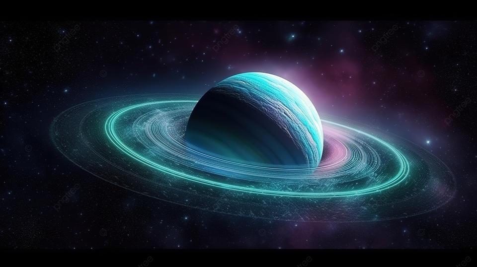

صورة تبين لنا مكونات المجموعة الشمسية
المجموعة الشمسية
المجموعة الشمسية هي النظام الكوكبي الذي يتكون من الشمس وكل ما يدور حولها من كواكب، أقمار، كويكبات، نيازك ومذنبات. تشمل المجموعة الشمسية كواكب مثل عطارد، الزهرة، الأرض، المريخ، المشترى، زحل، أورانوس، نبتون والكواكب القزمة مثل بلوتو.
أجزاءالمجموعة الشمسية
تعريف مختصرا لكل كوكب بالمجموعة الشمسية
عطارد: الكوكب الأقرب إلى الشمس، يتميز بصغر حجمه وسطحه الصخري وكثافته العالية
الزهرة: ثاني أقرب كوكب إلى الشمس، يشبه الأرض في الحجم والتكوين، لكن له غلاف جوي كثيف جداً مكون من ثاني أكسيد الكربون.
الأرض: الكوكب الثالث من الشمس والمكان الوحيد المعروف بوجود حياة عليه، يمتاز بغلافه الجوي المتوازن ومياهه الوفيرة.
لمريخ: الكوكب الرابع من الشمس والمعروف بالكوكب الأحمر بسبب تربته الغنية بالحديد، يُعتقد أنه قد يكون هناك ماء مجمد تحت سطحه.
المشتري: أكبر كوكب في المجموعة الشمسية، يُعرف بجوهره الغازي العملاق والبقعة الحمراء الكبرى، وهي عاصفة ضخمة دامت لقرون.
زحل: الكوكب السادس من الشمس والذي يشتهر بحلقاته الجميلة المكونة من جليد وغبار.
أورانوس: الكوكب السابع ويمتاز بلونه الأزرق الفاتح بسبب غاز الميثان في غلافه الجوي، يدور حول محور مائل للغاية.
نبتون: الكوكب الثامن والأبعد عن الشمس، له لون أزرق عميق بسبب الميثان، ويشتهر بعواصفه الشديدة.
.jpg)
جدول يبين لنا كواكب المجموعة الشمسية
| كوكب |
عطارد |
الزهرة |
الأرض |
المريخ |
المشتري |
زحل |
أورانوس |
نبتون |
| رمز |
|
|
 |
|
 |
 |
 |
 |